Design Sprints
Enterprise Software
User Experience, Visual Design
8 months // 2019
Over an 8-month period, my manager, Aksa Alex, and I facilitated 5 design sprints to fill a gap that Collaborati
and TeamConnect CSM
have in the vendor and timekeeper onboarding process. This has been the biggest pain point for our clients, and our goal was to simplify and streamline this complicated process with our solutions.
For this discovery work, we were given the freedom to think outside the box and not be bound by current framework restrictions.
Credits
UX, research, wireframing, prototyping, user testing, visual design - Kailyn Lim
UX, research, wireframing, prototyping, user testing - Aksa Alex
Design system - Bryan Walker
Product - Kim Howard, Kim Felice, Dan Braun
Engineering - Amandelyn Wilson
Services - Isabel Keogh, Blair Bonnema
Support - Tracy Urban
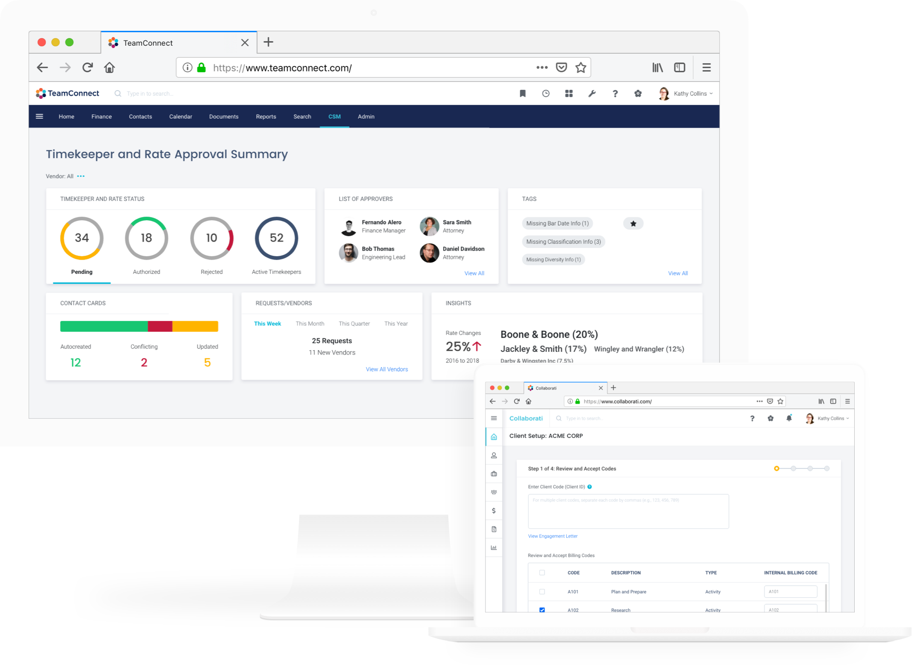
Discovery Process and Phases
Below is a discovery process Mitratech employs. It’s a highly collaborative process, not only internally, but with our customers as well. Through client calls and onsite visits, we discover the customers’ workflows, pain points, and wishlists. From there, we create a value map with ideas and concepts that would relieve pains and create confidence in our users. After validating the ideas with our users, we go into a design sprint to further flesh out the high-level concepts. We share the outputs from the design sprint with our internal stakeholders, as well as our clients, to ensure that we have successfully created meaningful solutions.
The Problem
Vendor* and TK* onboarding is core to Collaborati, and it’s currently a cumbersome process.
Collaborati
is an e-billing software that allows law firms to invoice their clients, who are customers of
TeamConnect, an enterprise legal management platform.
In order to establish a client-vendor relationship, the vendor must onboard to Collaborati, and the vendor information must be entered in TeamConnect by the client.
Once that’s done, the law firms can submit the timekeepers and their rates through Collaborati, which will then show up in
TeamConnect CSM
for the client to review and approve/reject.
Long story short, VTKO* should be a simple and seamless process, but it has become complicated with unnecessary touchpoints and verifications.
* Vendor - a.k.a. law firm
* TK - timekeeper
* VTKO - vendor & timekeeper onboarding
THE GOAL
Streamline the process of onboarding new firms by reducing the number of steps and increasing collaboration between law firms and their clients. Simplify the submission/approval and maintenance of timekeepers and rates with a user-friendly interface.
VTKO Process
Below summarizes the steps of vendor and timekeeper onboarding. It proved to be an extremely helpful reference point for the team in each of the design sprints.
1. Client initiates client-vendor relationship
2. Vendor is created in Collaborati by Mitratech Support
3. Client approves vendor in TeamConnect
4. Vendor enters timekeeper information in Collaborati and sends it to the client
5. Client approves or rejects timekeeper in TeamConnect
6. Vendor enters in rates for the timekeeper in Collaborati and sends them to the client
7. Client approves or rejects timekeeper rates in TeamConnect
Research
Prior to kicking off the design sprint, the product team, including the designers, conducted research in order to gain a thorough understanding of the customers and their use cases.
In total, we had 13 one-on-one interviews with customers (one was on-site in Houston, TX), 5 stakeholder conversations, and 2 internal and external surveys.
FINDINGS
Design Sprint
A design sprint is a five-day process for answering critical business questions through design, prototyping, and gathering feedback from customers.
We actually experimented with our design sprints and have tried various lengths: one week, a week and a half, and two weeks.
In the end, we decided that one-week sprints worked best for us. During the design sprints, we got together and collaborated on how to solve a specific problem from many different angles.
We have had a total of 5 design sprints so far to streamline the VTKO process, each sprint tackling a facet of the bigger problem.
Design Sprint Outputs - Collaborati
Since VTKO involves both Collaborati and Teamconnect CSM, my manager and I decided to take on one product in the design sprints;
I focused on designing solutions for Collaborati, while my manager handled TeamConnect CSM. Communication and collaboration were crucial since we each worked on different products that are deeply intertwined with each other.
Our goal was to develop a holistic solution. Some (not all) of the wireframes from each sprint are shared below.
SPRINT #1 - VENDOR REGISTRATION AND SETUP
This is the first step in VTKO, and we thought it was important to start the series of design sprints here. With a smoother vendor registration and setup process, the rest of the VTKO workflow will be set up for success.
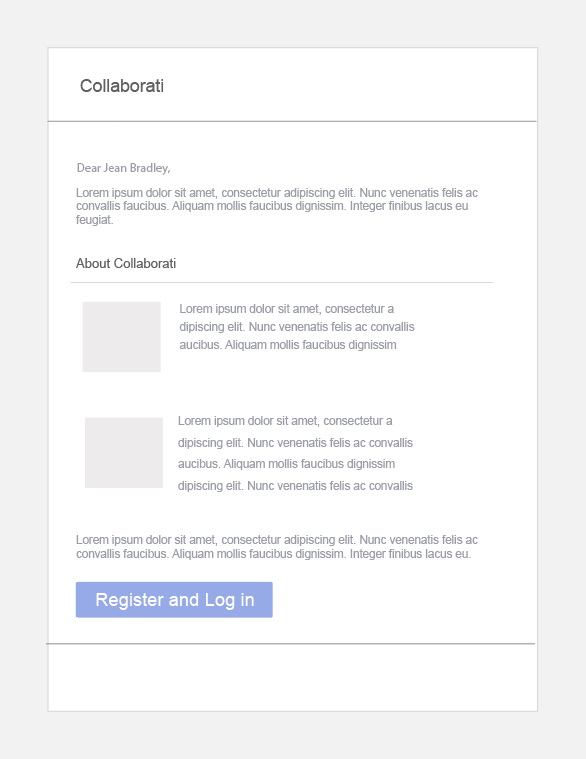
Vendor registration email
More user-friendly, as it saves the user from having to copy and paste email and temporary password to register
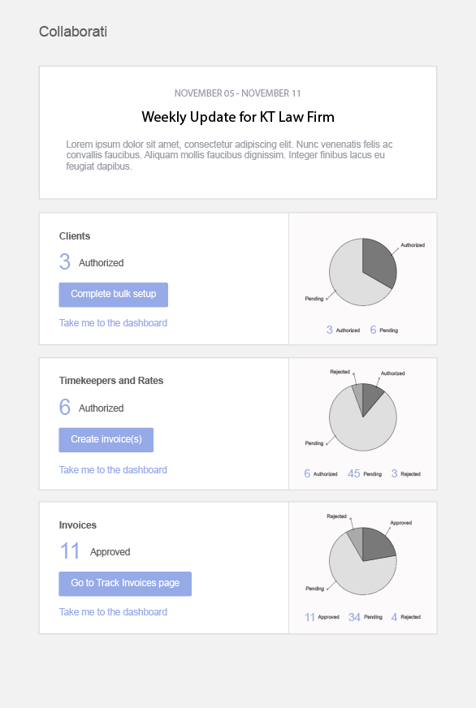
Email digests
This is a new concept. Email digests will include clear action items
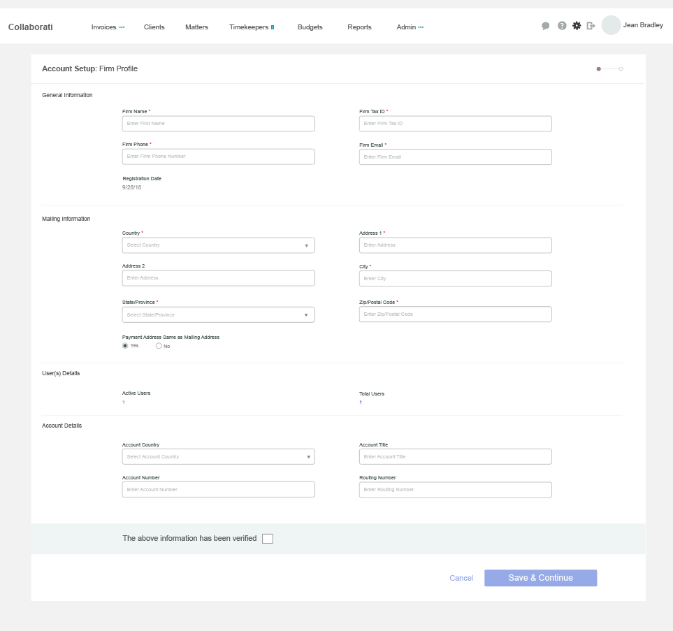
Vendor account setup
Reduced two pages into a one-page form
SPRINT #2 & 3 - TIMEKEEPER AND RATE SUBMISSION
According to our research, this is the area that gives the customers the most amount of pain. Therefore, we decided to spend two sprints on this. We wanted to make sure that we captured as many of the use cases as possible.
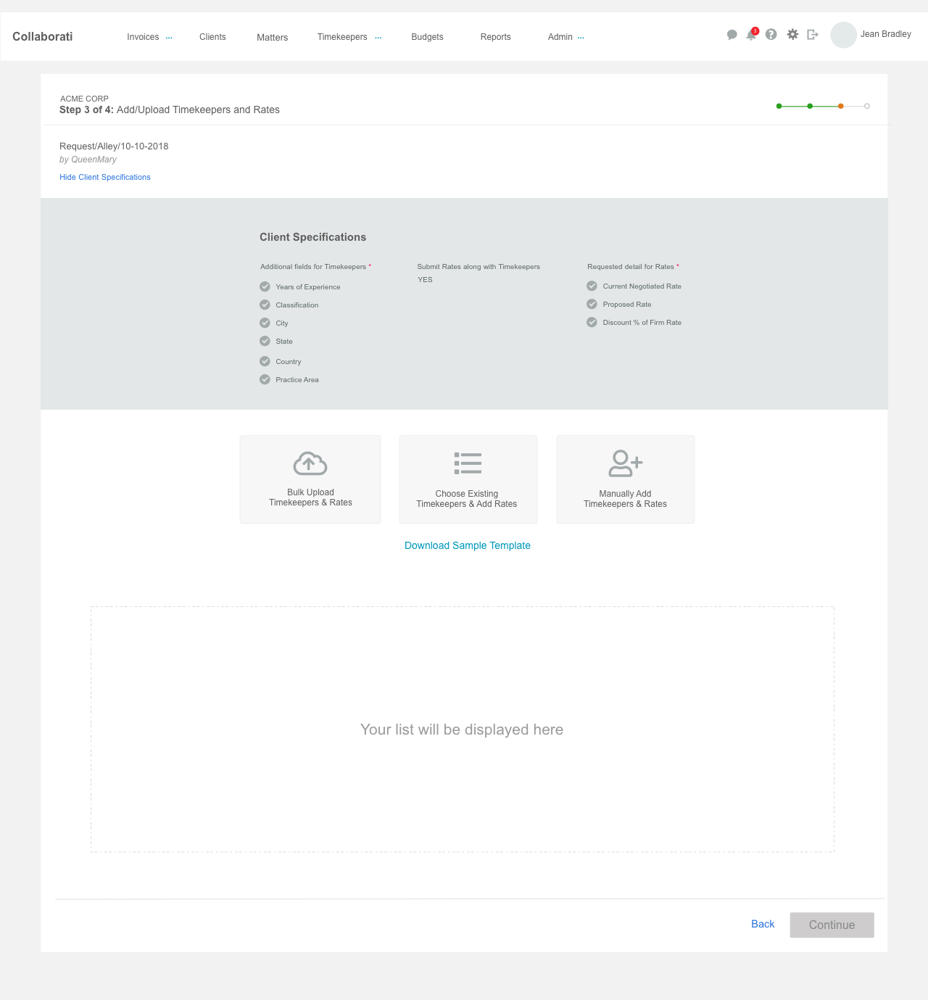
TK & rate upload - 3 options
Client Specifications at the top (expandable & collapsable) clearly outlines what additional fields and details the client is requesting. Also, there is a new option to pick and send existing TK’s for approval
TK & rate upload - manual
Combined the submission of TK’s and TK rates into a single request
SPRINT #4 - TIMEKEEPER AND RATE APPROVAL
Although the goal is to combine the TK and rate requests into one, there could be a scenario when the client adds new matter information in TeamConnect CSM and assigns timekeepers that are already approved to work on a different matter. There is another use case where the client may add a vendor that is already approved to the newly created matter, and the vendor gets notified and sends new TK’s to work on that new matter. I had to design workflows that cover both scenarios.
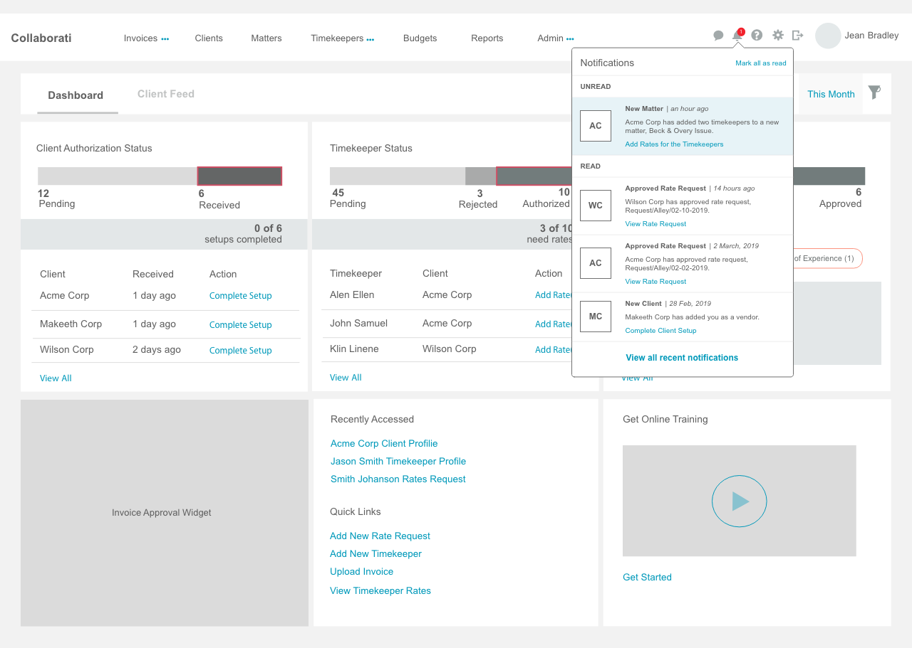
Dashboard notification
Dashboard is a new concept. The vendor will get notified of any updates, which would foster communication with the client, as well as productivity
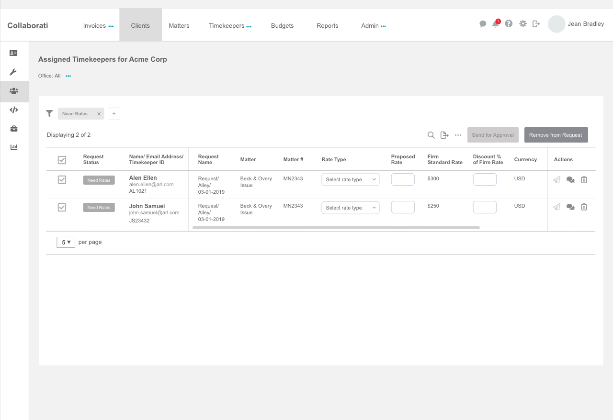
Rate submission for pre-authorized TK’s
Vendor can submit rates in bulk or individually
SPRINT #5 - CURRENCY TOLERANCE SETTING
In this sprint, we introduced the concept of “currency tolerance setting,” which is a setting the client can establish at the system level. The timekeepers will maintain a home currency rate, but when their rates are submitted in a different currency, the client side will validate and approve, if within a tolerance. Most of the work done in this sprint was in TeamConnect CSM since the tolerance setting and validation would live there.
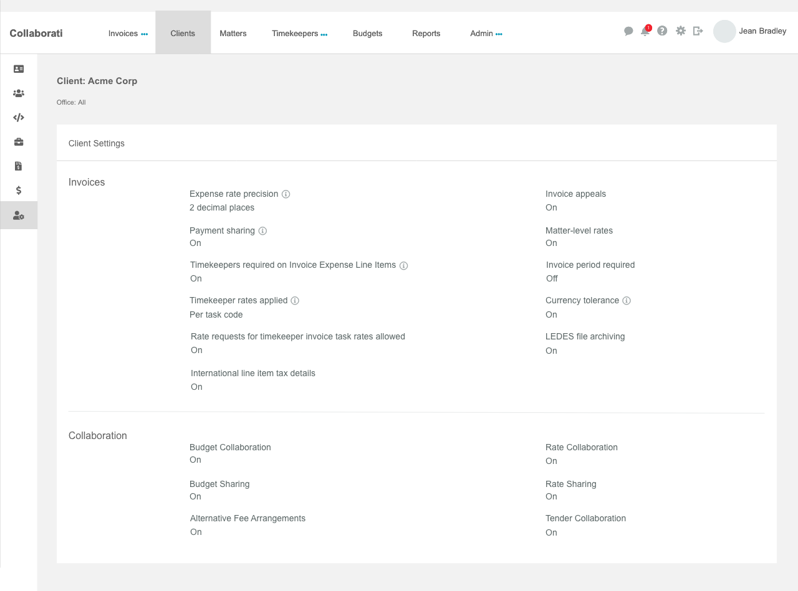
Client settings
Added a currency tolerance field in client-specific settings for the vendor’s reference. There will be an info icon next to it that the user can hover over and see additional information
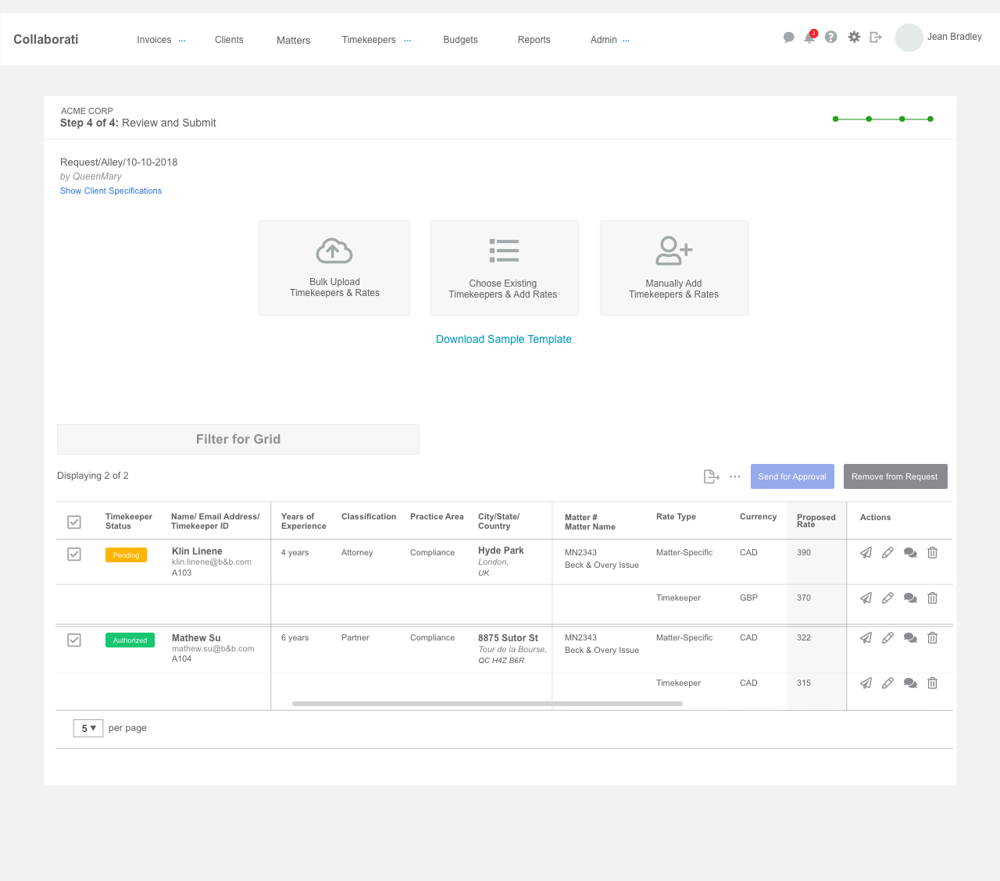
Rate submission in different currencies
Introduced the concept of submitting rates in different currencies for timekeepers in a single request
Design Sprint Outputs - Visual Design
After creating wireframes and validating them with customers and internal stakeholders, I worked on visual design and implemented colors, fonts, and other elements for both TeamConnect CSM and Collaborati by referencing the design system.
This is one of my favorite stages of the entire design process because it feels as if the solutions we produced get one step closer to becoming a reality.
TEAMCONNECT CSM
In this sprint, we introduced the concept of “currency tolerance setting,” which is a setting the client can establish at the system level. The timekeepers will maintain a home currency rate, but when their rates are submitted in a different currency, the client side will validate and approve, if within a tolerance. Most of the work done in this sprint was in TeamConnect CSM since the tolerance setting and validation would live there.
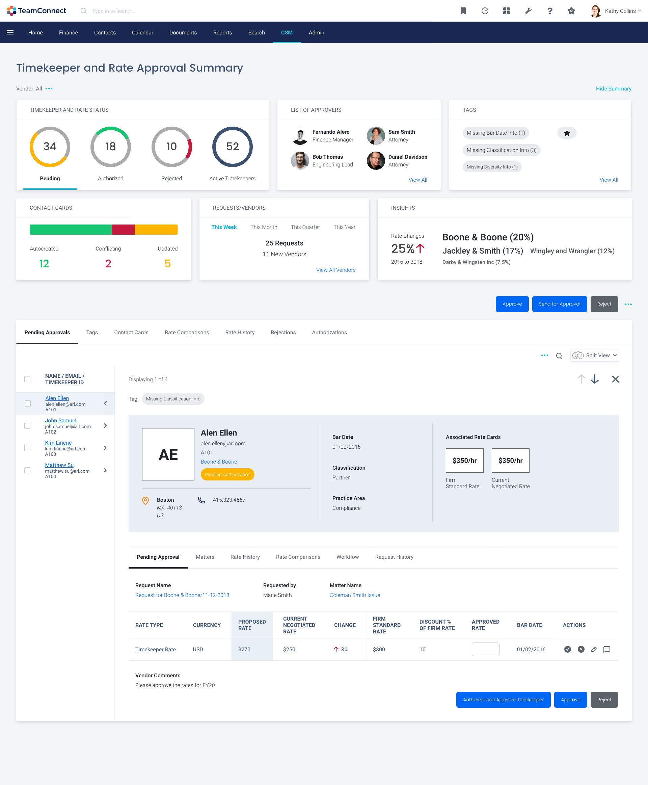
TeamConnect CSM dashboard - split view
COLLABORATI
In this sprint, we introduced the concept of “currency tolerance setting,” which is a setting the client can establish at the system level. The timekeepers will maintain a home currency rate, but when their rates are submitted in a different currency, the client side will validate and approve, if within a tolerance. Most of the work done in this sprint was in TeamConnect CSM since the tolerance setting and validation would live there.
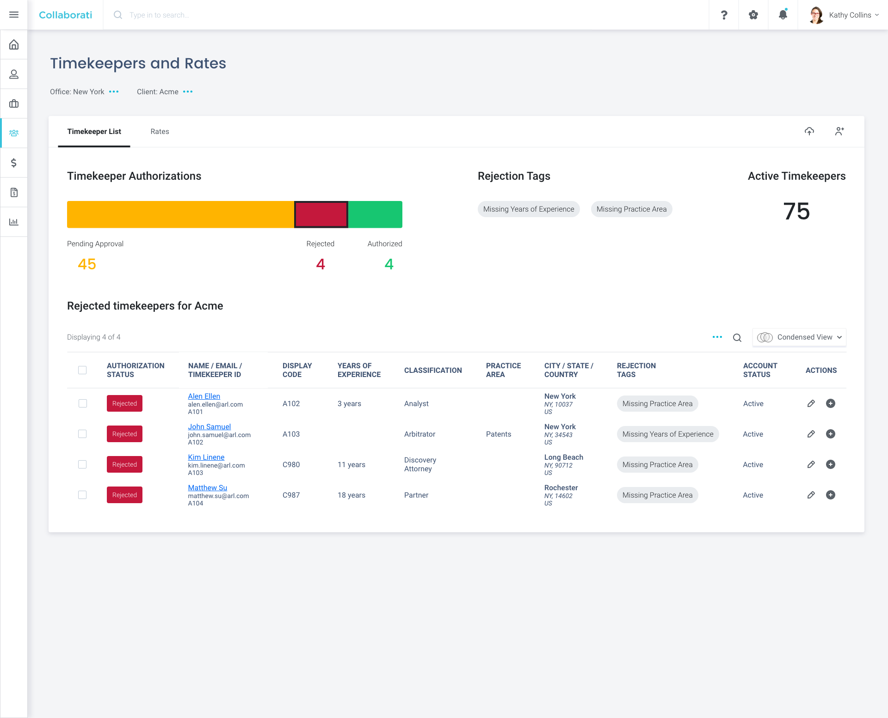
Collaborati Timekeepers and Rates tab
Takeaways
Design sprint was a lot different than PI (program increment) sprint in that I had the creative freedom to come up with as many ideas as I could without a lot of restrictions.
I also loved the amount of collaboration the team brought to this discovery work; we met frequently and bounced ideas back and forth with an open mind.
Working hand-in-hand with another designer (my manager) provided a huge learning experience for me. She truly helped me expand my horizons and gain confidence in my design skills.
Although the design sprint weeks were jam-packed with deliverables and meetings, those were also the most exciting, inspiring, and productive weeks. However, that doesn’t mean we haven’t had any setbacks.
Initially, we had trouble getting feedback from customers. We would share our forward-thinking designs in the one-hour client working groups following each design sprint, but due to the amount of work we had to share, we would often run out of time for feedback.
After two lackluster working groups, I made a suggion that we utilize the client working groups to do user testing. Rather than just going through our interactive prototypes and explaining our rationale, we would ask the participants to perform specific tasks using the prototypes.
The groups were relatively small - consisted of 2-3 people - so this method was effective. It also sprouted engagement from everyone on the call, as well.
The other challenge we initially ran into was collaboration. This stemmed from my manager working remotely in Houston, TX, while everyone else on the team worked out of the Austin office.
Communicating and brainstorming ideas together became difficult at times due to distance. Therefore, we used a tool called Miro to combat this.
This platform allowed us to build user flows together and share comments in real-time. In addition to that, my manager drove to Austin for the last two design sprints and spent the first two days, so that we could brainstorm and do sketches together in-person.